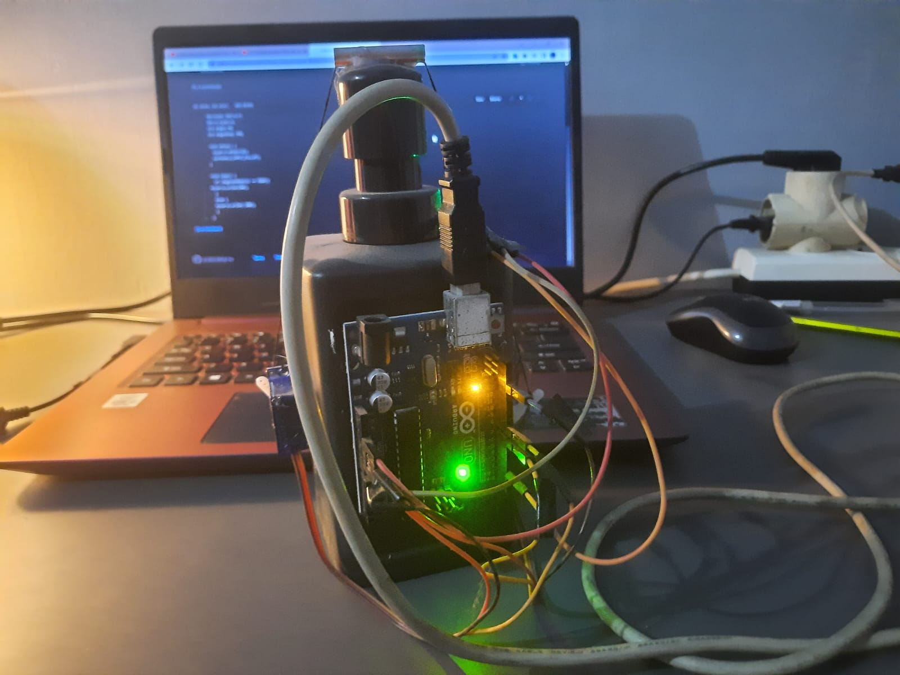

13/03/2023

This is originally a school project during holiday but it's not obligatory. So it's a kind of enrichment project. And we work in a team of 5 peoples. We decided to conduct this project because we saw the opportunity to learn new things particularly on how to work with arduino and some of its components like servo, and sensors.
We were actually a bit confused at first what thing that we want to make out of arduino. Then I came up with this Idea to make automatic handsanitizer because it's still covid at the time and I just thought that this thing will be usefull. We can put it in our class after we make it (my initial thought).
So this project was inspired by youtube video below. But we didn't just copy paste it, rather there was some changes and adjustments that we need to commit while conducting this project.
First thing first we must prepare all of the items needed. Here list of every item and I'll also put the link where you could buy it in Indonesia. If you are from outside of Indonesia, I believe you'll find it in the Amazon too.
Let's start with the Infrared Sensor. There will be three pins on the sensor, each one is for vcc(Voltage Common Collector), out(Output), and GND(Ground). Connect vcc to the 3.3V pin in your arduino, this will be the power input of the sensor. Then plug the "out" pin to the pin number 2 (well, you could basically choose to plug it on any digital pin in arduino, so it doesn't need to be 2). This is where we can get the data from the sensor whether it should be on or off. And lastly, connect the GND to the GND pin on your arduino.
Now move on to the servo. This is where the changes need to be made. The reason why we use two servo instead of one is because one servo don't produce enough force to pull the dispenser's pump (It actually depends on the dispenser that you're using). The servo will have three wires that is red, brown, and orange. Brown wire indicating Ground(GND), red is for power input, and orange wire is where the signal from arduino will be transferred through. Since we're using two servo, we need to joint the red cable from each arduino then we can plug it to 5V pin on your arduino. As for the brown wire, just connect it to the arduino GND pin. And lastly for the orange wire, connect it to any digital pin in arduino (I decide to plug each one to pin number 7 and 8).
Before we write an arduino program, make sure you've installed Arduino IDE on your computer. Then just simply create new file and we are ready to program. Well, you can look up my to program here and simply copy paste it to your IDE. Make nacessary changes if you have different pin arrangement to mine, otherwise just leave it as it is. How the program works is very simple, the sensor will ditects if there is an object in front of it and send a data to the arduino in a form of signal. The data will then pass through a conditional where if the data contains a certain value the statement will be considered TRUE and the servo will moves their arm, otherwise it will be FALSE and nothing will happen.
The last thing that we need to do is to put everything together.Glue the arduino board on the back side of the dispenser. Stick the sensor near the dispenser's head, or in the place where our hands will be whenever want to use the handsanitizer. Put one servo in the right side and the other one in the left side of the dispenser. Make sure those servo are in the opposite direction to each other and the arms will swing outward. don't forget to attach the string to the arm of both servos through the head of the dispenser. This will allows the dispenser get pulled by the string and then emit just the right amount of handsanitizer to your hands. This is how it's gonna looks like when it's done from the back.
It's always been so fun working with Arduino, and I really look forward to do other project with Arduino!!